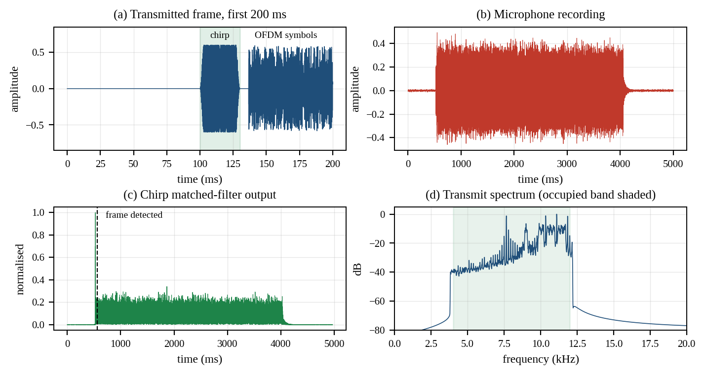
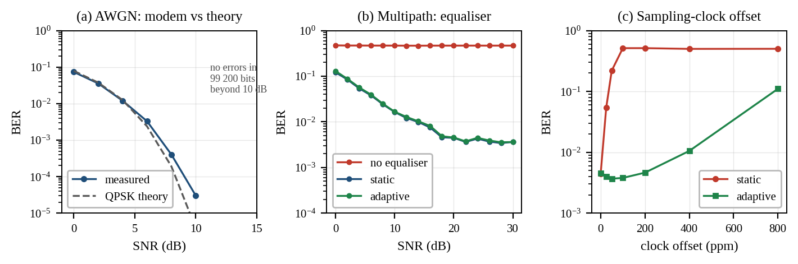
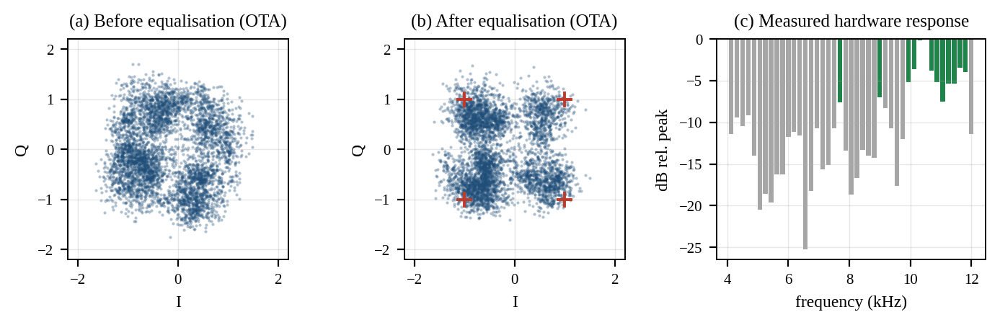

| Project Title: | Adaptive Self-Calibrating OFDM-Based Acoustic Communication System for Reliable Cross-Device File Transfer with Opportunistic Echo-Based Environment Awareness |
| Project Code: | Custom (self-proposed) |
| Student Name: | Akshay Ajit Rukade |
| Roll Number: | 24F2100357 |
| Team Members: | Akshay Ajit Rukade — 24F2100357 Krithika Jayganesh — 24F2100165 Ritesh Gajanan Sonar — 23F3000249 |
| Submission Date: | 31-08-2026 |
1Project Overview
This project builds a digital communication link that sends data between two ordinary computers using nothing but a speaker and a microphone, over the 4–12 kHz audio band. The modulation is OFDM: bits are mapped to QPSK symbols, placed on the bins of a 256-point inverse FFT with Hermitian symmetry so the output is directly a real audio waveform, and recovered at the far end by FFT after chirp-based frame synchronisation. The "adaptive" and "self-calibrating" parts of the title are the receiver measuring the acoustic channel from embedded pilot subcarriers and tracking how it drifts during a transmission, and the system probing the hardware before it transmits and using only the subcarriers that survive.
2Work Completed So Far
- OFDM modulator and demodulator (
ofdm/modem.py,ofdm/config.py): Implemented Gray-coded QPSK mapping, the 256-point IFFT with Hermitian symmetryX[N−k] = conj(X[k]), and a 64-sample cyclic prefix. The Hermitian constraint makes the IFFT output purely real, so the signal is written straight to a WAV file with no up-conversion stage — verified numerically, with a residual imaginary part of 7 × 10⁻¹⁷. 43 occupied subcarriers give 31 data + 12 pilot, 62 bits per symbol, 9 300 bit/s raw. - Frame synchronisation (
ofdm/sync.py): 30 ms linear chirp preamble (3–13 kHz, raised-cosine tapered) detected by matched filtering and a Hilbert envelope. Timing is sample-exact down to 0 dB SNR in simulation, with the correlation peak 54× the noise floor at that point. - Channel estimation and equalisation (
ofdm/equalizer.py): Least-squares estimate from a fully-known reference symbol, smoothed across frequency, followed by an MMSE equaliserW[k] = conj(H[k]) / (|H[k]|² + σ²)rather than plain1/H, so that deep spectral nulls do not blow up the noise. Three selectable modes — none, static, adaptive — so the benefit of each stage is measured rather than assumed. - Adaptive pilot tracking (
ofdm/equalizer.py): Per-symbol tracking of a smooth multiplicative correctionC(k) = g·exp(j(a + b·k))fitted to the pilots by weighted least squares, wherebis the phase slope produced by a sampling-clock offset. Tested against a simulated clock offset up to 800 ppm. - PAPR reduction (
ofdm/modem.py): Iterative clipping and filtering, three passes. Clipping 6 dB above RMS reduces PAPR from 11.3 dB to 8.0 dB and recovers 3.3 dB of average transmit power at no measurable BER cost above 14 dB SNR. - Self-calibration (
ofdm/calibrate.py): The chirp is used a second time as a channel sounder. The measured end-to-end magnitude response spans 43 dB across the band on our test hardware, so the transmitter keeps only subcarriers within a set backoff of the strongest one. This took the over-the-air uncoded BER from 3.1 × 10⁻¹ to 8.3 × 10⁻³. - Simulated channel and BER framework (
ofdm/channel.py,experiments/): Sparse multipath, a band-pass transducer response, AWGN at a target SNR, and a resampling-based clock offset. Four experiments run at 16 trials × 6 200 bits per point, writing results to JSON. - File transfer, framing and a repetition code (
ofdm/framing.py): CRC-protected header plus fixed-length CRC-tagged packets, giving a packet-recovery-rate metric. An interleaved repetition-3 code was added after over-the-air tests showed that one bit error destroys a whole packet. - Real audio path and web dashboard (
ofdm/audio_io.py,dashboard/): Transmission and capture through ALSA with automatic capture-gain calibration, and a single-page dashboard that plots the whole pipeline from data exported by the experiment scripts. - Echo ranging (
ofdm/echo.py): The same matched filter reused to time the reflected chirp, givingd = c·Δt/2. Mean error 0.1 cm over 27 measurements.
3Screenshots / Results So Far



Measured results
| Measurement | Result | Conditions |
|---|---|---|
| BER vs QPSK theory (AWGN) | 7.3 × 10⁻² @ 0 dB | theory 7.9 × 10⁻²; no errors in 99 200 bits above 10 dB |
| Unequalised, multipath | 4.7 × 10⁻¹ | flat at every SNR from 0 to 30 dB |
| Equalised, multipath | 3.6 × 10⁻³ | error floor set by spectral nulls, not noise |
| Static equaliser, 100 ppm clock offset | 5.1 × 10⁻¹ | simulated offset |
| Adaptive tracking, 100 ppm clock offset | 3.8 × 10⁻³ | simulated offset — 135× improvement |
| PAPR after clipping and filtering | 8.0 dB | from 11.3 dB; +3.3 dB average transmit power |
| Over-the-air uncoded BER | 1.2 × 10⁻² | real speaker → real microphone, EVM −7.1 dB |
| Over-the-air packet recovery | 4 / 5 packets | 229 of 293 bytes recovered with repetition-3 |
| Simulated file transfer | 293 / 293 bytes | 20 dB SNR, 80 ppm offset — exact recovery |
| Echo ranging accuracy | 0.1 cm mean error | 27 measurements, 0.25–6 m |

rukadeakshay01.github.io/acoustic-ofdm.4Workflow / Approach
The transmitter and receiver are mirror images, with synchronisation and channel estimation as the two stages that have no counterpart on the transmit side:
TRANSMITTER
file --> CRC packets --> repetition FEC --> bits --> QPSK map
--> insert pilots + reference symbol --> Hermitian IFFT (N=256)
--> add cyclic prefix (64) --> clip & filter (PAPR) --> prepend chirp
--> WAV --> speaker
(( acoustic channel ))
RECEIVER
microphone --> bandpass 4-12 kHz --> chirp matched filter --> frame start
--> strip cyclic prefix --> FFT --> LS channel estimate (reference symbol)
--> per-symbol pilot tracking --> MMSE equalise --> QPSK demap
--> FEC decode --> CRC check --> file
Before any of this runs, a calibration pass transmits the chirp alone, measures the end-to-end magnitude response, and restricts both ends to the usable subcarriers. Development followed the phase plan agreed at the proposal review: Phase 1 an end-to-end link with BER against theory, Phase 2 pilots and equalisation, Phase 3 adaptive tracking and echo ranging. Every stage is measured against the one before it rather than assumed to help.
5Tools & Technologies Used
- Language: Python 3.11
- Libraries: NumPy (FFT, arrays), SciPy (Butterworth filtering, Hilbert transform, resampling), Matplotlib (report figures)
- Audio I/O: ALSA
aplay/arecordcalled directly, with PipeWirepactlfor automatic level calibration — no extra Python audio dependency - Dashboard: a single self-contained HTML page with hand-written SVG charts, published through GitHub Pages
- Version control: Git, public repository at
github.com/RukadeAkshay01/acoustic-ofdm - Platform / IDE: Linux, VS Code
6Work Remaining
Honest position. Measured against the full proposal we would put the project at roughly 30% complete. Phases 1 and 2 work and are measured, and the Phase 3 adaptive tracking works in simulation. But the single result the whole proposal rests on — that the system holds a link between two separate devices, which do not share a clock — has not been demonstrated. Every over-the-air run so far is one laptop transmitting to its own microphone, so both ends run off the same crystal and the clock offset our tracker is designed to fix is simulated, not real.
- The two-device test. Transmit from one laptop and receive on another. This is the largest remaining item and everything else is lower priority than it.
- Bit-loading. The modem uses QPSK on every subcarrier. Since the measured hardware response varies by 43 dB, the correct answer is more bits on strong subcarriers and fewer on weak ones. The current code simply discards weak subcarriers, which works but wastes capacity.
- Justify the cyclic prefix length. 1.33 ms covers the impulse response we measured on one desk. We have not measured a reverberant room, so the value is not yet defensible in general.
- A real error-correcting code. The repetition-3 code is a stopgap that costs two thirds of the throughput. A convolutional or Reed–Solomon code is the proper answer.
- Multi-device / half-duplex operation and a receiver-to-transmitter feedback handshake so the calibration set can be negotiated rather than shared out of band.
- Out-of-band emission. The cyclic-prefix discontinuity and the clipping both splatter energy outside the band; windowed OFDM would address this.
- Final report, demo video and viva preparation.
7Challenges Faced
A single normalisation across two different signals (solved). My first transmitter normalised the whole frame — chirp and OFDM together — by one global peak. The chirp has a 3 dB peak-to-average ratio and the OFDM block about 9 dB, so this left the chirp roughly 6 dB too quiet. The failure showed up in the synchroniser, not in my module: the correlator locked onto random correlation inside the payload and BER came out at 0.49. Normalising the two parts separately took detection confidence from 8.6× the noise floor to 121×.
Synchroniser and channel estimator are not independent (solved). The receiver starts
its FFT window a few samples early, inside the cyclic prefix. That makes the apparent channel
rotate across subcarriers, and a pilot-based estimator can only follow it while the rotation
stays under π radians between adjacent pilots — that is, while the backoff D < N/(2·pilot
spacing) = 32 samples. We had chosen exactly 32, sitting on the aliasing limit, and the
adaptive equaliser produced BER between 0.3 and 0.45 for reasons neither module could show on
its own. Reducing the backoff to 8 samples fixed it.
The adaptive tracker initially made things worse (solved). Blending the pilot estimate
into the running estimate each symbol, H ← (1−μ)H + μH_pilot, raised BER from
3 × 10⁻⁴ to about 10⁻¹, and the loss did not shrink with SNR — so it was systematic, not noise.
The recursion was replacing a 43-subcarrier estimate with 12 pilots interpolated across
spectral nulls. Tracking a smooth two-parameter correction instead of re-estimating the
channel fixed it.
Most of the real-hardware debugging was not DSP (solved, but costly). Getting the
first genuine acoustic link took four fixes, all of which looked like DSP failures: ALSA emits a
clipped full-scale click when capture starts and again when it stops, and the matched filter
locked onto both in turn; the noise-floor estimate became signal-dominated once the search
window was narrowed; and on one occasion the speaker was simply muted, which cost about an hour
before anyone checked pactl get-sink-mute. We now calibrate the capture gain
automatically before every transmission, because the usable volume window turned out to be
narrow and very steep.
Still open: link margin over the air. Uncoded over-the-air BER is 1.2 × 10⁻², which is two orders of magnitude worse than the same configuration in simulation. Self-calibration removed most of the gap but not all of it, and we have not yet separated how much of what remains is nonlinearity in a small laptop speaker from how much is room reverberation.
8Individual Contribution
- Akshay Ajit Rukade (24F2100357) — me: The modem core —
ofdm/modem.pyandofdm/config.py. QPSK mapping and demapping; the Hermitian-symmetric IFFT and cyclic prefix, which is the decision that removed the up-conversion stage and with it all carrier-recovery work; the pilot sequence (pseudo-random rather than all-ones, which would clip a small speaker) and the chirp preamble; the PAPR clipping-and-filtering loop and the measurements that set 6 dB as the operating point; and the shared configuration object the rest of the team's code reads its parameters from. I also found and fixed the frame-normalisation defect described in §7. - Krithika Jayganesh (24F2100165): Channel estimation and equalisation —
ofdm/equalizer.py,ofdm/calibrate.py. The least-squares estimator, the choice of MMSE over zero-forcing, the adaptive pilot tracker including the diagnosis of why the obvious version failed, and the Stage-1 self-calibration that selects usable subcarriers. - Ritesh Gajanan Sonar (23F3000249): Synchronisation, testing and presentation —
ofdm/sync.py,ofdm/receiver.py,ofdm/channel.py,ofdm/framing.py,ofdm/audio_io.py,experiments/,dashboard/. The chirp matched filter, the simulated channel, all four BER experiments, the file framing and repetition code, the real ALSA audio path, and the web dashboard.
The integration debugging — which is where most of the difficulty turned out to be — was shared, since three of the four problems in §7 could only be seen by looking at two modules at once.
9Timeline for Remaining Work
| Week / Date Range | Planned Task |
|---|---|
| 1 Sep – 7 Sep | Two-device transmission test on separate laptops; measure the real clock offset and confirm the adaptive tracker against it rather than against a simulated offset |
| 8 Sep – 14 Sep | Bit-loading from the measured per-subcarrier SNR; replace the repetition code with a proper FEC; re-run the full BER suite |
| 15 Sep – 21 Sep | Reverberant-room impulse response measurement and cyclic-prefix justification; multi-device / half-duplex experiment; range and robustness testing |
| 22 Sep – 28 Sep | Final report, dashboard update with the two-device results, demo video and viva preparation |
This is a mid-term progress report. The final report with all 11 sections
will be submitted after end-term exams.
All figures and numbers above are generated from measured output and are reproducible from the
repository; none are illustrative.